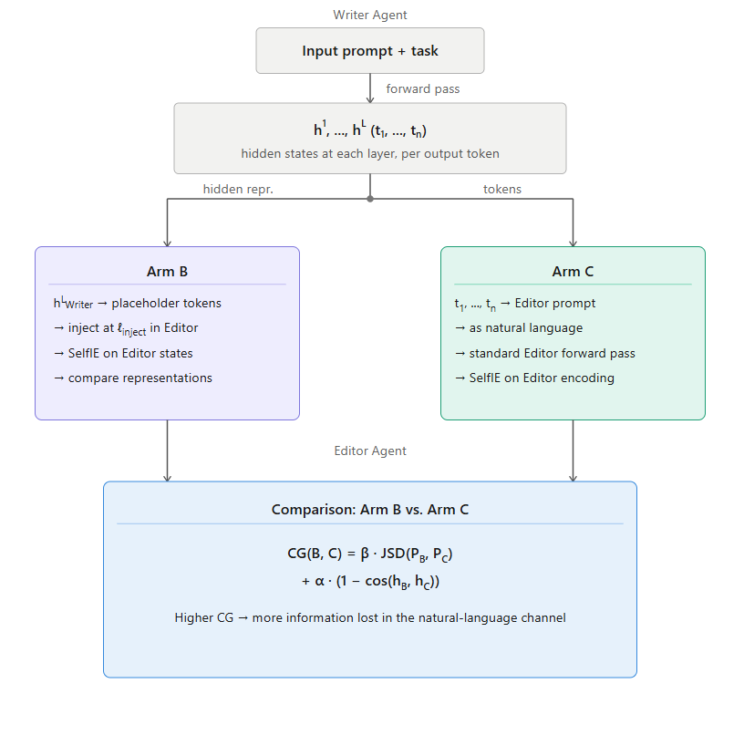
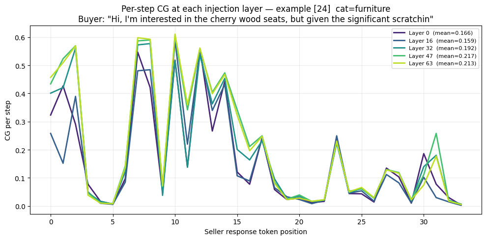
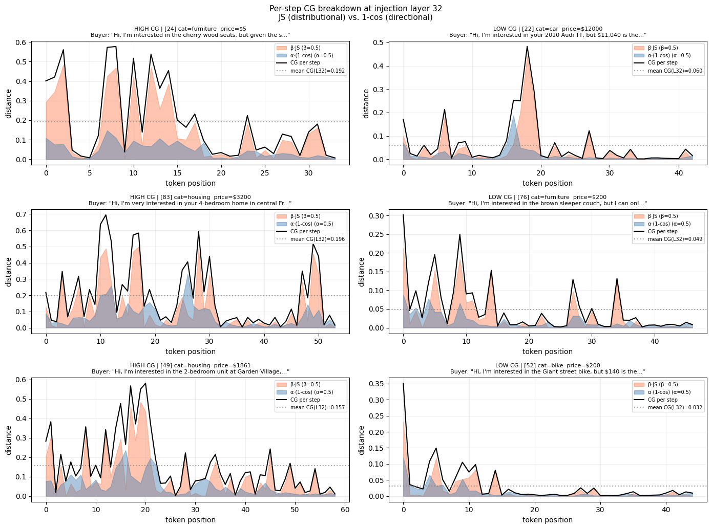

Multi-agent systems built on large language models (LLMs) increasingly rely on natural language as their default communication substrate. However, compressing rich internal latent states into discrete token sequences fundamentally limits inter-agent communication depth. We introduce a two-arm experimental framework placing a writer agent (sender) and an editor agent (receiver) in a pairwise communication scenario using CraigslistBargains. We compare hidden-state injection against standard natural-language transmission, quantifying representational fidelity via a composite Communication Gap (CG) score combining Jensen–Shannon divergence and cosine distance. Experiments on Qwen 3.5 (27B) reveal systematic, token-level gaps exposing structural fragility in the natural-language bottleneck of agentic workflows.
We compare two methods of agent communication. A writer agent (sender) and an editor agent (receiver) are placed in a pairwise communication scenario drawn from the CraigslistBargains dataset. For each scenario, we apply injection and probing methods to compare hidden representations across two conditions:
The writer's final-layer embeddings are injected directly into the editor's forward pass at token positions corresponding to the writer's output.
The writer's output tokens are passed to the editor as a standard text prompt through the conventional language channel.
We use SelfIE to inspect the editor's internal understanding at specific token positions and layers associated with the writer's output. Representational fidelity is quantified via a composite metric combining Jensen–Shannon divergence and cosine similarity.
We operationalize pairwise agent communication through a writer–editor scenario from CraigslistBargains. The writer agent drafts a buyer opening offer based on listing information; the editor agent evaluates and responds with feedback — an asymmetric setup mirroring common inter-agent workflows.
All experiments use Qwen 3.5 dense (27B parameters, no Mixture-of-Experts, 64 layers, 24 attention heads). Qwen was selected for its fully open architecture permitting embedding injection. Smaller models proved insufficiently expressive; larger models exceeded compute constraints.
A higher CG indicates more information lost when the natural-language channel replaces direct latent transfer. JSD captures distributional divergence; cosine distance captures geometric drift in embedding space.

Figure 1. Diagram of the project methodology comparing direct latent transfer (Condition B) against natural-language transmission (Condition C).
We use the CraigslistBargains dataset, which provides a structured negotiation environment with buyer and seller roles that map naturally onto the writer–editor framing. For each example, the pipeline produces: (1) a buyer LLM generating an opening offer (writer); (2) a seller LLM responding with feedback (editor); (3) CG scores comparing text-channel and latent-channel representations via teacher forcing on the exact seller response.
Writer: "Hi, I'm interested in the Nishiki Colorado, but $101 is the most I can offer given the current market for vintage bikes."
"This draft is strong because it is polite, specific, and justifies the lowball offer…"
0.056 → 0.045 → 0.085 → 0.089 → 0.090 Low & stable
Low, stable CG values suggest that text faithfully represents the writer's reasoning in this case — a successful instance of pragmatic communication.

Figure 2. Per-step CG at five injection layers (0, 16, 32, 47, 63) for an electronics scenario. Layer means range from 0.175 to 0.218, indicating low sensitivity to injection depth.

Figure 3. Per-step CG breakdown at injection layer 32, decomposed into distributional divergence (β·JS, orange) and geometric drift (α(1−cos), blue). Left: high-CG scenarios. Right: low-CG scenarios.
The decomposition reveals two qualitatively distinct components. Geometric drift exhibits a relatively stable, low-level baseline throughout generation. Distributional divergence is highly erratic, with localized spikes dominating total CG during acute misalignment events.
Critically, several instances show the receiver perfectly aligning with the sender for multiple consecutive steps — CG approaching zero — only to suddenly diverge on a single token prediction. This mathematically validates the fragility of the natural-language bottleneck: a single misunderstood or ambiguous token can temporarily shatter the shared contextual distribution between communicating agents.